- Sec01-03-10【スライド】loTセキュリティ総合対策に関連した施策【総務省】
- Sec01-03-10-01サイバーセキュリティセミナー意見交換会【総務省】
- 2019年1月29日総務省関東総合通信局
- loTセキュリティ総合対策(2017年10月公表）
- 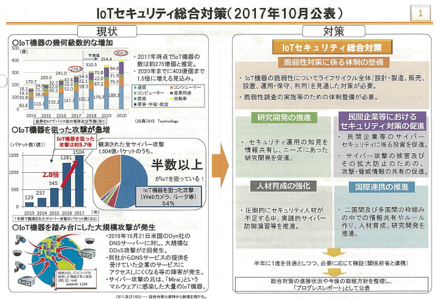
- 脆弱性対策に係る体制の整備
- 民間企業等におけるセキュリティ対策の促進
- 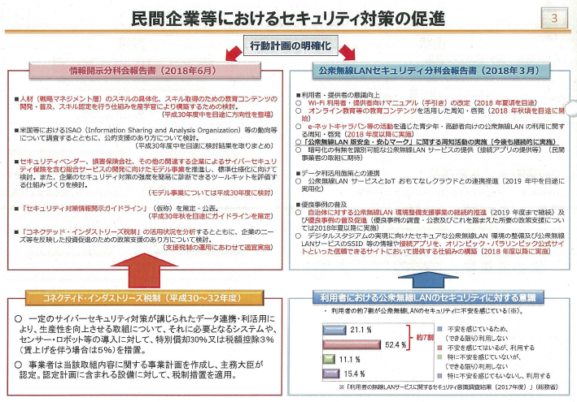
- 研究開発の推進
- 人材育成の強化
- 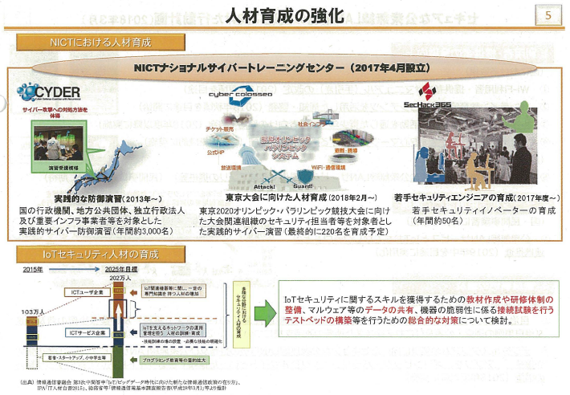
- 国際連携の推進
- 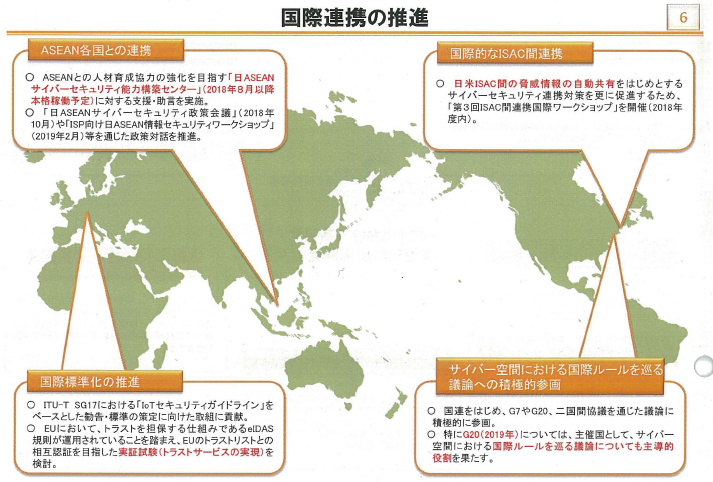
- セキュアな公衆無線LAN環境の実現に向けた行動計画(2018年3月）
- 公衆無線LAN版安全・安心マークについて
- 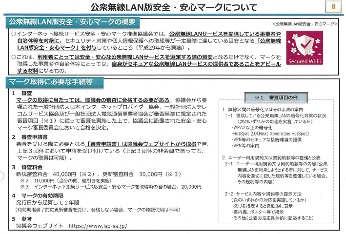
- loT機器調査及び利用者への注意喚起プロジェクト
- 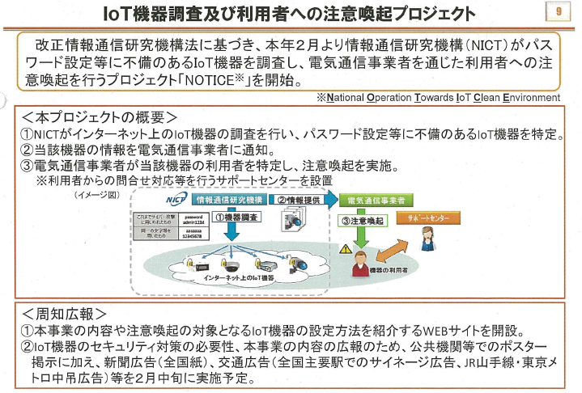
- Sec01-03-10-02国立研究開発法人情報通信研究機構法（平成11年法律第162号）附則第８条第２項に規定する業務の実施に関する計画の認可申請の概要
- 2019年1月総務省サイバーセキュリティ統括官室
- 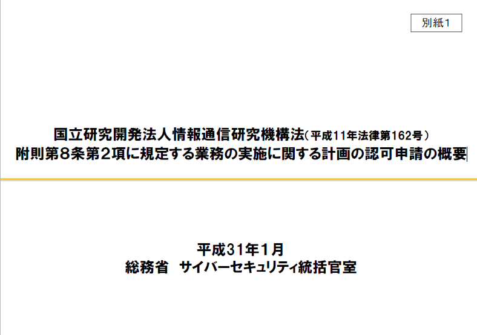
- 国立研究開発法人情報通信研究機構法の一部改正について
- 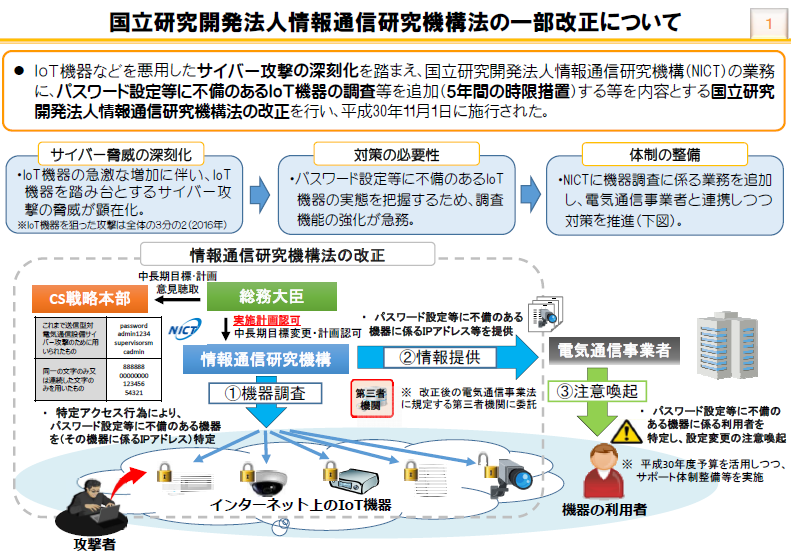
- ＩｏＴ機器などを悪用したサイバー攻撃の深刻化を踏まえ、国立研究開発法人情報通信研究機構（NICT）の業務に、パスワード設定等に不備のあるIoT機器の調査等を追加（５年間の時限措置）する等を内容とする国立研究開発法人情報通信研究機構法の改正を行い、平成30年１１月１日に施行された。
- IoT機器調査の業務概要①
- 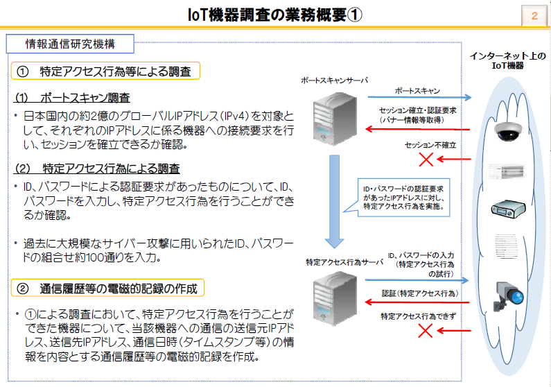
- ① 特定アクセス行為等による調査
- (1)ポートスキャン調査
- • 日本国内の約２億のグローバルIPアドレス（IPv4）を対象として、それぞれのIPアドレスに係る機器への接続要求を行い、セッションを確立できるか確認。
- (2)特定アクセス行為による調査
- • ID、パスワードによる認証要求があったものについて、ID、パスワードを入力し、特定アクセス行為を行うことができるか確認。
- • 過去に大規模なサイバー攻撃に用いられたＩＤ、パスワードの組合せ約１００通りを入力。
- ② 通信履歴等の電磁的記録の作成
- • ①による調査において、特定アクセス行為を行うことができた機器について、当該機器への通信の送信元IPアドレス、送信先IPアドレス、通信日時（タイムスタンプ等）の情報を内容とする通信履歴等の電磁的記録を作成。
- IoT機器調査の業務概要②
- 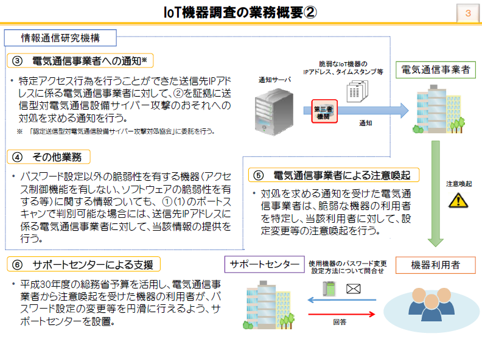
- ③ 電気通信事業者への通知※
- • 特定アクセス行為を行うことができた送信先IPアドレスに係る電気通信事業者に対して、②を証拠に送信型対電気通信設備サイバー攻撃のおそれへの対処を求める通知を行う。
- ※ 「認定送信型対電気通信設備サイバー攻撃対処協会」に委託を行う。
- ④ その他業務
- • パスワード設定以外の脆弱性を有する機器（アクセス制御機能を有しない、ソフトウェアの脆弱性を有する等）に関する情報ついても、①（１）のポートスキャンで判別可能な場合には、送信先IPアドレスに係る電気通信事業者に対して、当該情報の提供を行う。
- ⑤ 電気通信事業者による注意喚起
- • 対処を求める通知を受けた電気通信事業者は、脆弱な機器の利用者を特定し、当該利用者に対して、設定変更等の注意喚起を行う。
- ⑥ サポートセンターによる支援
- • 平成30年度の総務省予算を活用し、電気通信事業者から注意喚起を受けた機器の利用者が、パスワード設定の変更等を円滑に行えるよう、サポートセンターを設置。
- 実施計画に関する省令の規定について
- 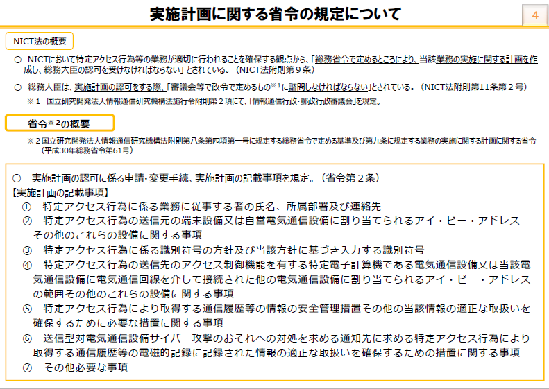
- 実施計画の記載内容①
- 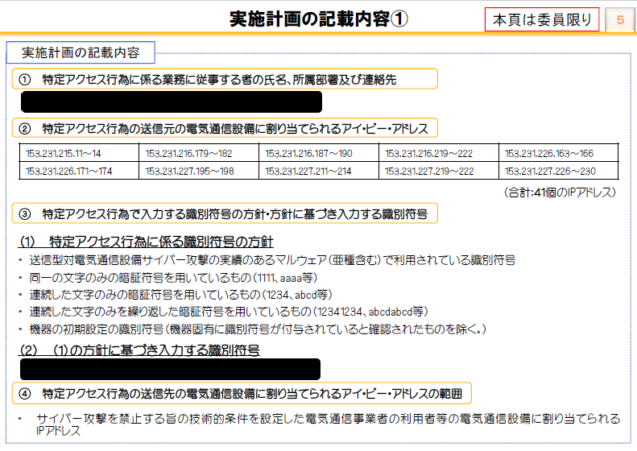
- ① 特定アクセス行為に係る業務に従事する者の氏名、所属部署及び連絡先
- ② 特定アクセス行為の送信元の電気通信設備に割り当てられるアイ・ピー・アドレス
- ③ 特定アクセス行為で入力する識別符号の方針・方針に基づき入力する識別符号
- （１） 特定アクセス行為に係る識別符号の方針
- • 送信型対電気通信設備サイバー攻撃の実績のあるマルウェア（亜種含む）で利用されている識別符号
- • 同一の文字のみの暗証符号を用いているもの（1111、aaaa等）
- • 連続した文字のみの暗証符号を用いているもの（1234、abcd等）
- • 連続した文字のみを繰り返した暗証符号を用いているもの（12341234、abcdabcd等）
- • 機器の初期設定の識別符号（機器固有に識別符号が付与されていると確認されたものを除く。）
- （２） （１）の方針に基づき入力する識別符号
- ④ 特定アクセス行為の送信先の電気通信設備に割り当てられるアイ・ピー・アドレスの範囲
- • サイバー攻撃を禁止する旨の技術的条件を設定した電気通信事業者の利用者等の電気通信設備に割り当てられるIPアドレス
- 実施計画の記載内容②
- 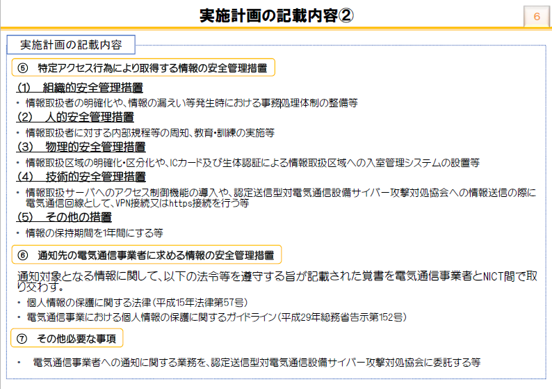
- ⑤ 特定アクセス行為により取得する情報の安全管理措置
- （１） 組織的安全管理措置
- • 情報取扱者の明確化や、情報の漏えい等発生時における事務処理体制の整備等
- （２） 人的安全管理措置
- • 情報取扱者に対する内部規程等の周知、教育・訓練の実施等
- （３） 物理的安全管理措置
- • 情報取扱区域の明確化・区分化や、ICカード及び生体認証による情報取扱区域への入室管理システムの設置等
- （４） 技術的安全管理措置
- • 情報取扱サーバへのアクセス制御機能の導入や、認定送信型対電気通信設備サイバー攻撃対処協会への情報送信の際に電気通信回線として、VPN接続又はhttps接続を行う等
- （５） その他の措置
- • 情報の保持期間を１年間にする等
- ⑥ 通知先の電気通信事業者に求める情報の安全管理措置
- 通知対象となる情報に関して、以下の法令等を遵守する旨が記載された覚書を電気通信事業者とNICT間で取り交わす。
- • 個人情報の保護に関する法律（平成15年法律第57号）
- • 電気通信事業における個人情報の保護に関するガイドライン（平成29年総務省告示第152号）
- ⑦ その他必要な事項
- • 電気通信事業者への通知に関する業務を、認定送信型対電気通信設備サイバー攻撃対処協会に委託する等
- その他
- IoT機器調査及び利用者への注意喚起の取組「NOTICE※」について
- 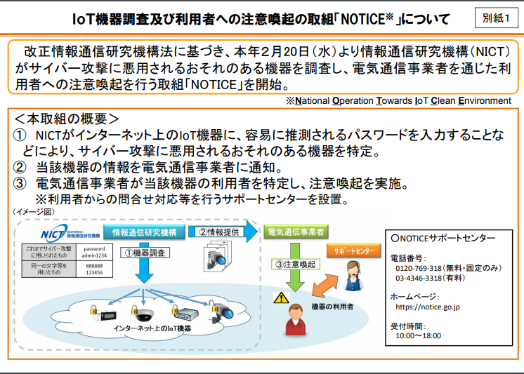
- 改正情報通信研究機構法に基づき、本年２月20日（水）より情報通信研究機構（NICT）がサイバー攻撃に悪用されるおそれのある機器を調査し、電気通信事業者を通じた利用者への注意喚起を行う取組「NOTICE」を開始。
- ＜本取組の概要＞
- ① NICTがインターネット上のIoT機器に、容易に推測されるパスワードを入力することなどにより、サイバー攻撃に悪用されるおそれのある機器を特定。
- ② 当該機器の情報を電気通信事業者に通知。
- ③ 電気通信事業者が当該機器の利用者を特定し、注意喚起を実施。
- ※利用者からの問合せ対応等を行うサポートセンターを設置。
- ○NOTICEサポートセンター
- 電話番号：
- 0120‐769‐318（無料・固定のみ）
- 03‐4346‐3318（有料）
- ホームページ：
- https://notice.go.jp
- 受付時間：
- 10:00～18:00